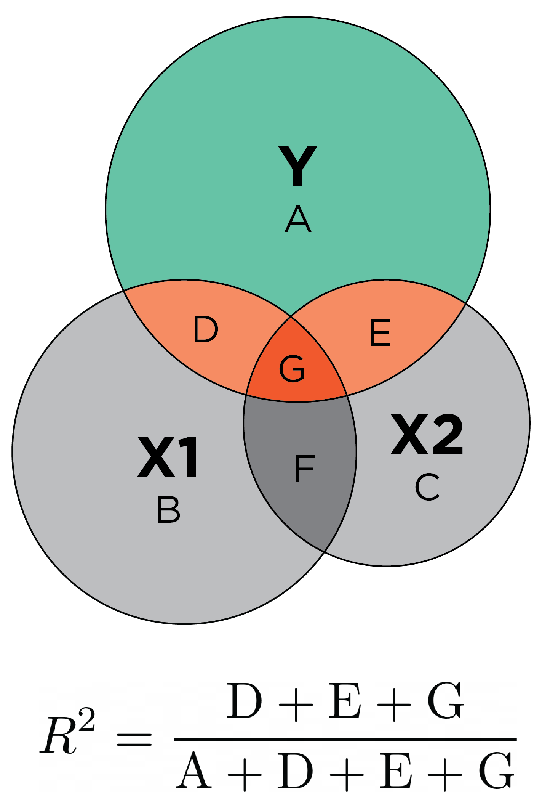

R version 4.4.1 (2024-06-14)
Platform: x86_64-pc-linux-gnu
Running under: Ubuntu 22.04.4 LTS
Matrix products: default
BLAS: /usr/lib/x86_64-linux-gnu/openblas-pthread/libblas.so.3
LAPACK: /usr/lib/x86_64-linux-gnu/openblas-pthread/libopenblasp-r0.3.20.so; LAPACK version 3.10.0
locale:
[1] LC_CTYPE=C.UTF-8 LC_NUMERIC=C LC_TIME=C.UTF-8
[4] LC_COLLATE=C.UTF-8 LC_MONETARY=C.UTF-8 LC_MESSAGES=C.UTF-8
[7] LC_PAPER=C.UTF-8 LC_NAME=C LC_ADDRESS=C
[10] LC_TELEPHONE=C LC_MEASUREMENT=C.UTF-8 LC_IDENTIFICATION=C
time zone: UTC
tzcode source: system (glibc)
attached base packages:
[1] stats graphics grDevices utils datasets methods base
loaded via a namespace (and not attached):
[1] htmlwidgets_1.6.4 compiler_4.4.1 fastmap_1.2.0 cli_3.6.3
[5] tools_4.4.1 htmltools_0.5.8.1 yaml_2.3.8 rmarkdown_2.27
[9] knitr_1.47 jsonlite_1.8.8 xfun_0.45 digest_0.6.36
[13] rlang_1.1.4 evaluate_0.24.0
I need your help!
I want your feedback to make the book better for you and other readers. If you find typos, errors, or places where the text may be improved, please let me know. The best ways to provide feedback are by GitHub or hypothes.is annotations.
Opening an issue or submitting a pull request on GitHub: https://github.com/isaactpetersen/Fantasy-Football-Analytics-Textbook
Adding an annotation using hypothes.is.
To add an annotation, select some text and then click the
symbol on the pop-up menu.
To see the annotations of others, click the
symbol in the upper right-hand corner of the page.
9 Multiple Regression
9.1 Getting Started
9.1.1 Load Packages
9.2 Overview of Multiple Regression
Multiple regression examines the association between multiple predictor variables and one outcome variable. It allows obtaining a more accurate estimate of the unique contribution of a given predictor, by controlling for other variables (covariates).
Regression with one predictor takes the form of Equation 9.1:
\[ y = \beta_0 + \beta_1x_1 + \epsilon \tag{9.1}\]
where \(y\) is the outcome variable, \(\beta_0\) is the intercept, \(\beta_1\) is the slope, \(x_1\) is the predictor variable, and \(\epsilon\) is the error term.
A regression line is depicted in Figure 9.3.

Regression with multiple predictors—i.e., multiple regression—takes the form of Equation 9.2:
\[ y = \beta_0 + \beta_1x_1 + \beta_2x_2 + ... + \beta_px_p + \epsilon \tag{9.2}\]
where \(p\) is the number of predictor variables.
9.3 Components
- \(B\) = unstandardized coefficient: direction and magnitude of the estimate (original scale)
- \(\beta\) (beta) = standardized coefficient: direction and magnitude of the estimate (standard deviation scale)
- \(SE\) = standard error: uncertainty of unstandardized estimate
The unstandardized regression coefficient (\(B\)) is interpreted such that, for every unit change in the predictor variable, there is a __ unit change in the outcome variable. For instance, when examining the association between age and fantasy points, if the unstandardized regression coefficient is 2.3, players score on average 2.3 more points for each additional year of age. (In reality, we might expect a nonlinear, inverted-U-shaped association between age and fantasy points such that players tend to reach their peak in the middle of their careers.) Unstandardized regression coefficients are tied to the metric of the raw data. Thus, a large unstandardized regression coefficient for two variables may mean completely different things. Holding the strength of the association constant, you tend to see larger unstandardized regression coefficients for variables with smaller units and smaller unstandardized regression coefficients for variables with larger units.
Standardized regression coefficients can be obtained by standardizing the variables to z-scores so they all have a mean of zero and standard deviation of one. The standardized regression coefficient (\(\beta\)) is interpreted such that, for every standard deviation change in the predictor variable, there is a __ standard deviation change in the outcome variable. For instance, when examining the association between age and fantasy points, if the standardized regression coefficient is 0.1, players score on average 0.1 standard deviation more points for each additional standard deviation of their year of age. Standardized regression coefficients—though not the case in all instances—tend to fall between [−1, 1]. Thus, standardized regression coefficients tend to be more comparable across variables and models compared to unstandardized regression coefficients. In this way, standardized regression coefficients provide a meaningful index of effect size.
9.4 Coefficient of Determination (\(R^2\))

9.5 Covariates
Covariates are variables that you include in the statistical model to try to control for them so you can better isolate the unique contribution of the predictor variable(s) in relation to the outcome variable. Use of covariates examines the association between the predictor variable and the outcome variable when holding people’s level constant on the covariates. Inclusion of confounds as covariates allows potentially gaining a more accurate estimate of the causal effect of the predictor variable on the outcome variable. Ideally, you want to include any and all confounds as covariates. As described in Section 6.3.2.1, confounds are third variables that influence both the predictor variable and the outcome variable and explain their association. Covariates are potentially (but not necessarily) confounds. For instance, you might include the player’s age as a covariate in a model that examines whether a player’s 40-yard dash time at the NFL Combine predicts their fantasy points in their rookie year, but it may not be a confound.